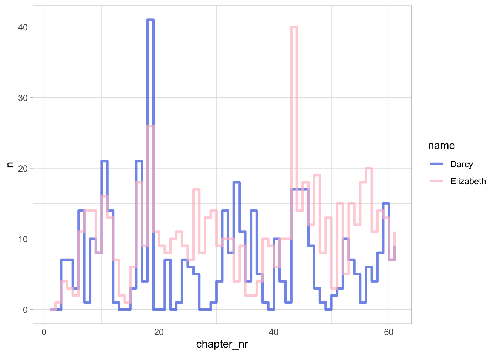

library(tidyverse)8 Регулярные выражения
Есть старая шутка, ее приписывают программисту Джейми Завински: если у вас есть проблема, и вы собираетесь ее решать при помощи регулярных выражений, то у вас две проблемы. Регулярные выражения – это формальный язык, который используется для того, чтобы находить, извлекать и заменять части текста.
Регулярные выражения (regex, regexp) объединяют литералы (буквальные символы) и метасимволы (специальные символы, задающие правила поиска). Для поиска используется строка-шаблон (англ. pattern), которая определяет правило сопоставления и поиска нужного фрагмента текста.
Для работы нам понадобится пакет {stringr} из библиотеки tidyverse. Также установите библиотеку {tokenizers}.
Загрузим текст романа “Гордость и предубеждение”.
library(janeaustenr)
pp <- prideprejudice
head(pp, 12) [1] "PRIDE AND PREJUDICE"
[2] ""
[3] "By Jane Austen"
[4] ""
[5] ""
[6] ""
[7] "Chapter 1"
[8] ""
[9] ""
[10] "It is a truth universally acknowledged, that a single man in possession"
[11] "of a good fortune, must be in want of a wife."
[12] "" 8.1 str_c(), str_trunc(), str_squish()
Для объединения строк используется функция str_c():
names <- c("Jane", "Elizabeth")
str_c(names, "Bennet", sep = " ")[1] "Jane Bennet" "Elizabeth Bennet"str_c(names, collapse = " and ")[1] "Jane and Elizabeth"Объединим текст романа в единый вектор и воспользуемся функцией str_trunc(), чтобы распечатать самое начало.
pp <- str_c(pp, collapse = " ")
str_trunc(pp, 120)[1] "PRIDE AND PREJUDICE By Jane Austen Chapter 1 It is a truth universally acknowledged, that a single man in posse..."Избавимся от лишних пробелов.
pp <- str_squish(pp)
str_trunc(pp, 120)[1] "PRIDE AND PREJUDICE By Jane Austen Chapter 1 It is a truth universally acknowledged, that a single man in possession ..."8.2 str_sub(), str_count(), str_length()
Функция str_sub() извлекает подстроку из строки.
opening <- str_sub(pp, 46, 162)
opening[1] "It is a truth universally acknowledged, that a single man in possession of a good fortune, must be in want of a wife."Ее также можно использовать для замены. Удалим название и автора.
str_sub(pp, 1, 35) <- ""
str_trunc(pp, 35)[1] "Chapter 1 It is a truth universa..."Узнаем длину первого предложения в символах.
str_length(opening) # или: nchar(opening)[1] 117Узнать длину в словах можно, посчитав число пробелов и добавив 1 (лишние пробелы мы уже удалили).
str_count(opening, " ") + 1[1] 238.3 Классы символов
В таблице показаны наиболее часто используемые специальные обозначения, которые применяются в регулярных выражениях для удобного поиска разных типов символов. (Пишем две косые черты, т.к. вторая косая черта “экранирует” первую, см. далее).
| Представление | Эквивалент | Значение |
|---|---|---|
\\d |
[0-9] |
Цифра |
\\D |
[^\\d] |
Любой символ, кроме цифры |
\\w |
[A-Za-zА-Яа-я0-9_] |
Символы, образующие «слово» (буквы, цифры и символ подчёркивания) |
\\W |
[^\\w] |
Символы, не образующие «слово» |
\\s |
[ \\t\\v\\r\\n\\f] |
Пробельный символ |
\\S |
[^\\s] |
Непробельный символ |
Так называемые символьные классы (или по-другому — POSIX-классы) также используются в регулярных выражениях для обозначения различных групп символов.
| Класс | Эквивалент | Значение |
|---|---|---|
[:upper:] |
[A-Z] |
Символы верхнего регистра |
[:lower:] |
[a-z] |
Символы нижнего регистра |
[:alpha:] |
[[:upper:][:lower:]] |
Буквы |
[:digit:] |
[0-9], т. е. \\d |
Цифры |
[:alnum:] |
[[:alpha:][:digit:]] |
Буквы и цифры |
[:word:] |
[[:alnum:]_], т. е. \\w |
Символы, образующие “слово” |
[:punct:] |
[!"#$%&'()*+,\-./:;<=>?@[\]^_{|}~] |
Знаки пунктуации |
[:blank:] |
[\\s\\t] |
Пробел и табуляция |
[:space:] |
[[:blank:]\\v\\r\\n\\f], т. е. \\s |
Пробельные символы |
[:cntrl:] |
Управляющие символы (перевод строки, табуляция и т.п.) | |
[:graph:] |
Печатные символы | |
[:print:] |
Печатные символы с пробелом |
8.4 str_split(), boundary(), классы
Функция str_split() разбивает одну строку на несколько и возвращает список. Чтобы получить вектор, используйте ее с unlist() или замените на str_split_1():
str_split_1(pp, pattern = "Chapter \\d+") |>
length()[1] 62Всего в романе 61 глава, но у нас получилось 62 элемента вместе с названием. В качестве шаблона мы использовали сочетание "Chapter \\d+", где \\d+ - это класс цифр (\\d) и квантификатор (+). Все вместе означает “одна или больше цифр”. Это можно записать иначе:
str_split_1(pp, pattern = "Chapter [0-9]+") |>
length()[1] 62Разобьем первое предложение на слова, используя предопределенный класс пробельных символов.
str_split_1(opening, "[[:space:]]") [1] "It" "is" "a" "truth"
[5] "universally" "acknowledged," "that" "a"
[9] "single" "man" "in" "possession"
[13] "of" "a" "good" "fortune,"
[17] "must" "be" "in" "want"
[21] "of" "a" "wife." Классы можно комбинировать и сочетать с квантификаторами.
str_split_1(opening, "[[:space:][:punct:]]+") [1] "It" "is" "a" "truth" "universally"
[6] "acknowledged" "that" "a" "single" "man"
[11] "in" "possession" "of" "a" "good"
[16] "fortune" "must" "be" "in" "want"
[21] "of" "a" "wife" "" Делить на слова можно и без регулярных выражений.
str_split_1(opening, boundary("word")) [1] "It" "is" "a" "truth" "universally"
[6] "acknowledged" "that" "a" "single" "man"
[11] "in" "possession" "of" "a" "good"
[16] "fortune" "must" "be" "in" "want"
[21] "of" "a" "wife" С предложениями так просто разобраться не получиться из-за сокращений Mr. и Mrs.
str_split_1(pp, boundary("sentence")) |>
head()[1] "Chapter 1 It is a truth universally acknowledged, that a single man in possession of a good fortune, must be in want of a wife. "
[2] "However little known the feelings or views of such a man may be on his first entering a neighbourhood, this truth is so well fixed in the minds of the surrounding families, that he is considered the rightful property of some one or other of their daughters. "
[3] "\"My dear Mr. "
[4] "Bennet,\" said his lady to him one day, \"have you heard that Netherfield Park is let at last?\" "
[5] "Mr. "
[6] "Bennet replied that he had not. " Попробуем решить эту проблему при помощи замены. Но сначала узнаем кое-что о точке, которую нам предстоит заменить.
8.5 Метасимволы и экранирование
Все метасимволы представлены в таблице ниже.
| Описание | Символ |
|---|---|
| открывающая квадратная скобка | [ |
| закрывающая квадратная скобка | ] |
| обратная косая черта | \ |
| карет | ^ |
| знак доллара | $ |
| точка | . |
| вертикальная черта | | |
| знак вопроса | ? |
| астериск | * |
| плюс | + |
| открывающая фигурная скобка | { |
| закрывающая фигурная скобка | } |
| открывающая круглая скобка | ( |
| закрывающая круглая скобка | ) |
Квадратные скобки используются для создания классов, карет и знак доллара – это якоря (см. далее), но карет внутри квадратных скобок может также быть отрицанием. Точка – это любой знак, “джокер”.
Если необходимо найти буквальную точку, буквальный знак вопроса и т.п., то используется экранирование: перед знаком ставится косая черта. Но так как сама косая черта – это метасимвол, но нужно две косые черты, первая из которых экранирует вторую.
8.6 str_replace(), str_replace_all()
Испытаем функции str_replace() и str_replace_all() на одном предложении. Обратите внимание на кавычки: двойные можно использовать внутри одинарных (и наоборот).
dialogue <- c('"My dear Mr. Bennet," said his lady to him one day, "have you heard that Netherfield Park is let at last?" Mr. Bennet replied that he had not. "But it is," returned she; "for Mrs. Long has just been here, and she told me all about it."')
str_replace_all(dialogue, "Mr\\.", "Mr") |>
str_split_1(boundary("sentence"))[1] "\"My dear Mr Bennet,\" said his lady to him one day, \"have you heard that Netherfield Park is let at last?\" "
[2] "Mr Bennet replied that he had not. "
[3] "\"But it is,\" returned she; \"for Mrs. "
[4] "Long has just been here, and she told me all about it.\"" Мы не убрали точку после сокращения Mrs, поэтому последнее предложение разделилось на два. Используем круглые скобки для группировки и оператор “или”. Третий аргумент означает, что мы оставляем первую группу, остальное отбрасываем.
str_replace_all(dialogue, "(Mr|Mrs)\\.", "\\1") [1] "\"My dear Mr Bennet,\" said his lady to him one day, \"have you heard that Netherfield Park is let at last?\" Mr Bennet replied that he had not. \"But it is,\" returned she; \"for Mrs Long has just been here, and she told me all about it.\""Прежде чем проделать такую замену для всего текста, проверим, нет ли там других подобных сокращений. Нам надо найти все последовательности символов, образующих слово, до точки, и посчитать частотность. Для этого понадобятся квантификаторы.
8.7 Квантификаторы
Квантификатор после символа, символьного класса или группы определяет, сколько раз предшествующее выражение может встречаться. Квантификатор может относиться более чем к одному символу в регулярном выражении, только если это символьный класс или группа.
| Представление | Число повторений | Эквивалент |
|---|---|---|
? |
ноль или одно | {0,1} |
* |
ноль или более | {0,} |
+ |
одно или более | {1,} |
Точное число повторений (интервал) можно задать в фигурных скобках:
| Представление | Число повторений |
|---|---|
{n} |
ровно n раз |
{m,n} |
от m до n включительно |
{m,} |
не менее m |
{,n} |
не более n |
Часто используется последовательность .* для обозначения любого количества любых символов между двумя частями регулярного выражения. Попробуем найти символы между прописной буквой и знаком препинания.
str_view(dialogue, "[A-Z].+[[:punct:]]")[1] │ "<My dear Mr. Bennet," said his lady to him one day, "have you heard that Netherfield Park is let at last?" Mr. Bennet replied that he had not. "But it is," returned she; "for Mrs. Long has just been here, and she told me all about it.">По умолчанию квантификаторам соответствует максимально длинная строка из возможных: квантификаторы являются жадными (greedy). Чтобы этого избежать, надо поставить после квантификатора знак вопроса. Это сделает его ленивым.
| regex | значение |
|---|---|
?? |
0 или 1, лучше 0 |
*? |
0 или больше, как можно меньше |
+? |
1 или больше, как можно меньше |
{n,m}? |
от n до m, как можно меньше |
str_view(dialogue, "[A-Z].+?[[:punct:]]")[1] │ "<My dear Mr.> <Bennet,>" said his lady to him one day, "have you heard that <Netherfield Park is let at last?>" <Mr.> <Bennet replied that he had not.> "<But it is,>" returned she; "for <Mrs.> <Long has just been here,> and she told me all about it."Сокращения больше трех букв вряд ли встретятся, поэтому можем уточнить код.
pattern <- "[A-Z].{1,2}\\."
str_view(dialogue, pattern)[1] │ "My dear <Mr.> Bennet," said his lady to him one day, "have you heard that Netherfield Park is let at last?" <Mr.> Bennet replied that he had not. "But it is," returned she; "for <Mrs.> Long has just been here, and she told me all about it."8.8 Наблюдающие конструкции
В нашем тексте иногда встречается написание имен прописными буквами, в первую очередь в письмах.
letter <- "I shall write again as soon as anything more is determined on. Yours, etc., EDW. GARDINER."
str_view(letter, pattern)[1] │ I shall write again as soon as anything more is determined on. Yours, etc., <EDW.> GARDI<NER.>Исключим те случаи, когда перед паттерном нет пробела.
| regex | значение |
|---|---|
(?=...) |
Положительный просмотр вперёд: далее должно идти … |
(?!...) |
Отрицательный просмотр вперёд: далее не должно идти … |
(?<=...) |
Положительный просмотр назад: перед этим должно быть … |
(?<!...) |
Отрицательный просмотр назад: перед этим не должно быть … |
Внутри скобок вместо троеточий (...) пишется нужное регулярное выражение.
pattern <- "(?<![A-Z])[A-Z].{1,2}\\."
str_view(letter, pattern)[1] │ I shall write again as soon as anything more is determined on. Yours, etc., <EDW.> GARDINER.Снова поправим: вместо любого символа после прописной ищем только строчные.
pattern <- "(?<![A-Z])[A-Z][a-z]{1,2}\\."
str_view(letter, pattern)str_view(dialogue, pattern)[1] │ "My dear <Mr.> Bennet," said his lady to him one day, "have you heard that Netherfield Park is let at last?" <Mr.> Bennet replied that he had not. "But it is," returned she; "for <Mrs.> Long has just been here, and she told me all about it."8.9 str_extract(), str_match()
Функция str_extract() ищет совпадения и возвращает только первое вхождение, str_extract_all() возвращает все. Функция str_match() работает похожим образом, но возвращает матрицу.
abbreviations <- str_extract_all(pp, pattern) |>
unlist() |>
table() |>
sort(decreasing = TRUE)
abbreviations
Mr. Mrs. St. Esq. Yes.
786 343 7 1 1 Теперь можно удалить точки из подобных сокращений.
pattern <- abbreviations[-5] |>
names() |>
str_remove("\\.") |>
str_c(collapse = "|")
pattern <- str_c(pattern, "|Sept|EDW", collapse = "")
pattern <- str_c("(", pattern, ")\\.")
pattern[1] "(Mr|Mrs|St|Esq|Sept|EDW)\\."pp_new <- str_replace_all(pp, pattern, "\\1")Теперь разделим текст на предложения и сохраним их в тиббл.
pp_tbl <- tibble(text = str_split_1(pp_new, boundary("sentence")))
pp_tblНемного приберемся в таблице: удалим подчеркивания (они соответствуют курсиву) и кавычки.
pp_tbl <- pp_tbl |>
mutate(text = str_remove_all(text, "_"),
text = str_remove_all(text, '\\"'))8.10 str_detect(), str_which(), str_subset()
Для поиска совпадений используются три функции: str_detect(), str_which() и str_subset(). Первая возвращает логический вектор (то есть вектор значений TRUE / FALSE); вторая - индексы элементов, а третья - сами эти элементы.
Добавим столбец с номером главы и удалим “Chapter …” из текста.
pp_tbl <- pp_tbl |>
mutate(chapter_nr = cumsum(str_detect(text, "Chapter \\d+"))) |>
mutate(text = str_remove(text, "Chapter \\d+"))
pp_tbl8.11 Раз Дарси, два Дарси…
Сколько раз в каждой главе упоминается мистер Дарси?
darcy_tbl <- pp_tbl |>
mutate(n = str_count(text, "(Mr )?Darcy")) |>
group_by(chapter_nr) |>
summarise(Darcy = sum(n))
darcy_tblПосчитаем то же для Элизабет (“мисс Беннет” не считаем, их слишком много).
liz_tbl <- pp_tbl |>
mutate(n = str_count(text, "Elizabeth")) |>
group_by(chapter_nr) |>
summarise(Elizabeth = sum(n))
liz_tblПостроим импровизированный таймлайн.
darcy_tbl |>
left_join(liz_tbl) |>
pivot_longer(-chapter_nr, values_to = "n") |>
ggplot(aes(chapter_nr, n, color = name)) +
geom_step(linewidth = 1.2, alpha = 0.7) +
theme_light() +
scale_color_manual(values = c("royalblue", "pink"))
Симметрия - признак мастерства!
8.12 str_to_upper() и str_to_lower()
Функции str_to_upper() и str_to_lower() меняют начертание с прописного на строчное или наоборот.
pp_tbl |>
mutate(text = str_to_lower(text)) |>
mutate(n = str_count(text, "married")) |>
group_by(chapter_nr) |>
summarise(married = sum(n)) |>
arrange(-married)Больше всего шума из-за замужества Лидии в главе 49!
8.13 Якоря и отрицания
Якоря позволяют искать последовательности символов в начале или в конце строки. Знак ^ (вне квадратных скобок!) означает начало строки, а знак $ – конец. Мнемоническое правило: First you get the power (^) and then you get the money ($).
Какие предложения начинаются с Dear…?
pp_tbl |>
filter(str_detect(text, "^Dear"))Какие предложения не заканчиваются точкой?
pp_tbl |>
mutate(text = str_squish(text)) |>
filter(!str_detect(text, "\\.$"))